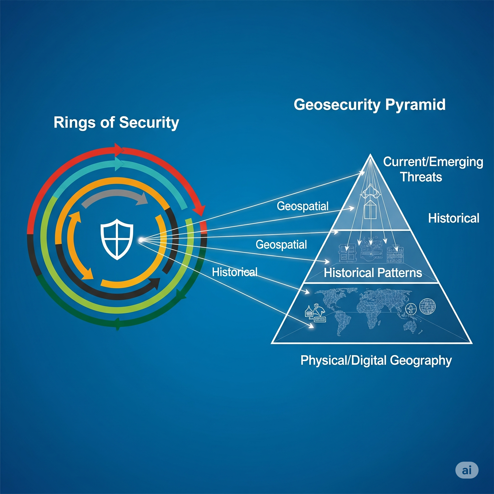

Manual de Geoseguridad
Capítulo 3: La Pirámide de la Geoseguridad
La "Pirámide de la Geoseguridad" es un modelo conceptual diseñado para visualizar y abordar de manera integral los múltiples niveles que influyen en la seguridad de un territorio y sus activos. Este modelo, mejorado y adaptado, permite una comprensión estructurada de la interdependencia entre diferentes factores, desde la geografía fundamental hasta las amenazas más contemporáneas.
"Piensa en la pirámide como un 'edificio seguro': necesitas cimientos firmes (geografía), conocer su historia y debilidades estructurales (patrones históricos) y estar siempre alerta a las tormentas de hoy (amenazas actuales)."

3.1. Modelo Mejorado con Capas Integradas
La pirámide se construye sobre una base sólida y asciende a través de capas que representan niveles crecientes de complejidad y dinamismo en el análisis de riesgos.
Capa Base: Geografía Física y Digital (El Fundamento Permanente)

- Descripción: Esta capa representa el sustrato inmutable o de muy lenta evolución. Incluye la topografía, hidrografía, geología, clima, así como la infraestructura digital subyacente (cables submarinos, centros de datos, redes de fibra óptica). Es el "lienzo" sobre el cual se desarrolla toda actividad. Un río, una cadena montañosa o la ubicación de un cable de fibra óptica submarino son elementos que definen oportunidades y vulnerabilidades estructurales.
- Importancia: Define las rutas naturales de movimiento, las zonas de recursos, las barreras físicas y las arterias de la comunicación y el comercio digital. Comprender esta capa es fundamental para cualquier análisis de seguridad territorial o digital.
Capa Intermedia: Patrones Históricos (El Eco del Pasado)
- Descripción: Esta capa analiza cómo la interacción humana con la geografía a lo largo del tiempo ha creado patrones de vulnerabilidad y resiliencia. Incluye rutas históricas de invasión, corredores comerciales milenarios, zonas de conflicto recurrentes, asentamientos urbanos estratégicos, o la evolución de infraestructuras críticas (puertos, ferrocarriles). También contempla cómo eventos naturales pasados (inundaciones, terremotos) han afectado la ocupación y la seguridad de un espacio.
- Importancia: El pasado no solo nos informa, sino que a menudo predice el futuro. Entender por qué ciertos lugares han sido históricamente puntos calientes o rutas vitales ayuda a anticipar dónde y cómo podrían manifestarse las amenazas actuales y futuras. Esta capa valida el enfoque geohistórico.
Capa Superior: Amenazas Actuales y Emergentes (El Dinamismo del Presente)

- Descripción: La cúspide de la pirámide se ocupa de las amenazas contemporáneas y de rápida evolución que interactúan con las capas inferiores. Esto incluye el terrorismo, el crimen organizado transnacional, la ciberguerra, el espionaje, la desinformación, las migraciones masivas, y las crisis humanitarias, así como el impacto acelerado del cambio climático (eventos meteorológicos extremos, escasez de recursos). Estas amenazas operan sobre y a través de la geografía física y digital, a menudo explotando vulnerabilidades históricas.
- Importancia: Esta capa es donde se manifiestan los riesgos directos que deben ser mitigados en tiempo real o a corto plazo. Es el foco de la inteligencia de amenazas y la respuesta inmediata, pero su análisis es incompleto sin la base geográfica e histórica.
3.2. Aplicación Práctica del Modelo
La Pirámide de la Geoseguridad no es solo un marco teórico; es una herramienta analítica para la toma de decisiones:
- Diagnóstico Integral: Permite realizar un análisis profundo de cualquier activo o territorio, identificando vulnerabilidades desde su fundamento geográfico hasta las amenazas más volátiles.
- Análisis Predictivo: Al superponer patrones históricos sobre la geografía fundamental y las amenazas actuales, se pueden prever escenarios de riesgo y anticipar posibles puntos de conflicto o vulnerabilidad.
- Diseño de Estrategias Proactivas: Facilita el desarrollo de planes de seguridad que no solo reaccionan a incidentes, sino que previenen su ocurrencia al abordar las causas raíz y las vulnerabilidades estructurales.
- Optimización de Recursos: Ayuda a asignar recursos de seguridad de manera más eficiente, priorizando la protección de los activos más críticos y las áreas de mayor riesgo.
- Comunicación Efectiva: Proporciona un lenguaje y un marco visual común para discutir los riesgos de seguridad con diversas partes interesadas, desde técnicos hasta decisores políticos.
Ejemplo de Aplicación: Al analizar la seguridad de una infraestructura energética en una zona costera, la Pirámide de la Geoseguridad llevaría a considerar:
- Geografía Física/Digital: La ubicación exacta de la planta, su proximidad al mar, la topografía circundante, las rutas de suministro energético (oleoductos/gaseoductos) y la conectividad a redes eléctricas y de comunicación digital.
- Patrones Históricos: Eventos pasados de inundaciones o tormentas en la zona, patrones de actividad criminal o terrorista en la región, o la importancia histórica de la ubicación para conflictos pasados.
- Amenazas Actuales: Riesgos de ciberataques a los sistemas de control de la planta, posibles actos de sabotaje, amenazas de desastres naturales exacerbados por el cambio climático (aumento del nivel del mar, tormentas más intensas), o tensiones geopolíticas que podrían afectar las rutas de suministro.
Este enfoque estratificado permite desarrollar una estrategia de Geoseguridad robusta que aborde cada nivel de vulnerabilidad de manera integrada.
3.3. Comparativa con Otros Modelos de Seguridad
Para apreciar plenamente la unicidad y el valor añadido de la Pirámide de la Geoseguridad, es útil compararla con modelos de seguridad ampliamente reconocidos. Si bien cada modelo ofrece herramientas valiosas, la Geoseguridad se distingue por su enfoque intrínsecamente geoespacial e histórico, y su capacidad para abordar amenazas híbridas de manera integral, superando las limitaciones de otras aproximaciones.
3.3.1. Defensa en Profundidad (Modelo de Anillos de Seguridad)
El concepto de "defensa en profundidad", o "anillos de seguridad", es una estrategia fundamental en seguridad. Visualmente, se representa a menudo como círculos concéntricos o capas, donde un activo crítico se sitúa en el núcleo y está protegido por barreras sucesivas. Cada anillo o capa (físico, lógico, humano) está diseñado para detectar, disuadir, retrasar o mitigar un ataque, actuando como una red de seguridad si una capa anterior es vulnerada. Es un modelo robusto para construir una protección escalonada contra intrusiones.
- Similitudes con la Pirámide de la Geoseguridad:
- Defensa por Capas: Ambos modelos reconocen la necesidad de estructurar la protección en múltiples niveles alrededor de un activo o un objetivo.
- Identificación de Activos Críticos: Ambos parten de la base de identificar qué es lo que se necesita proteger (el "centro" o núcleo de los anillos, o el objeto de análisis en la pirámide).
- Mitigación de Riesgos: Ambas buscan reducir la probabilidad y el impacto de los incidentes de seguridad mediante la aplicación de diferentes controles y medidas.
- Diferencias y Valor Añadido de la Pirámide de la Geoseguridad:
- Dimensión Geoespacial Intrínseca: El modelo de anillos, si bien puede aplicarse a elementos geográficos (ej., un muro alrededor de una instalación), no integra de forma inherente la geografía misma como una capa activa de análisis. Un "anillo" se ve como una barrera, sin profundizar en cómo su ubicación en el terreno, su topografía, su clima o la infraestructura adyacente pueden influir en su vulnerabilidad o eficacia. La Pirámide, con su "Capa Base: Geografía Física y Digital", coloca la propia ubicación y su entorno como el primer y fundamental pilar de la seguridad.
- Profundidad Geohistórica como Contexto y Capa Activa: La defensa en profundidad suele centrarse en la configuración de la seguridad en el presente frente a amenazas contemporáneas. En contraste, la Pirámide de la Geoseguridad añade una "Capa Intermedia: Patrones Históricos". Esto significa que no solo protegemos el "anillo", sino que analizamos por qué ese punto geográfico ha sido históricamente vulnerable, o cómo eventos pasados (naturales o humanos) han moldeado sus debilidades. Los anillos tradicionales no suelen preguntar cómo la "historia del lugar" afecta su resistencia.
- Análisis Integrado de Amenazas Híbridas (Físico-Digital): Los modelos de anillos a menudo operan en silos: un conjunto de anillos para la seguridad física y otro para la ciberseguridad. La "Capa Superior: Amenazas Actuales y Emergentes" de la Pirámide de la Geoseguridad, sin embargo, aborda explícitamente los riesgos híbridos. Entiende que un ataque a un "anillo" lógico (ej., una red SCADA) puede tener un impacto devastador y geográficamente localizado en un "anillo" físico (ej., la infraestructura energética que sopporta una región entera).
- Enfoque Proactivo y Predictivo mediante Inteligencia Geoespacial: La defensa en profundidad se orienta a la detección y contención una vez que un atacante interactúa con una barrera. La Geoseguridad, al integrar la inteligencia GEOINT y OSINT geoespacial en su ciclo analítico, busca anticipar y predecir dónde y cómo un atacante podría intentar romper cualquier "anillo" (o penetrar una capa de la pirámide) antes de que la acción ocurra, basándose en la geografía dinámica del espacio.
En síntesis, mientras que el modelo de "anillos de seguridad" es excelente para visualizar barreras superpuestas, la Pirámide de la Geoseguridad lo eleva al infundir en cada capa un profundo conocimiento geoespacial, histórico y de la naturaleza híbrida de las amenazas. No se trata solo de construir anillos, sino de entender el terreno y la historia sobre los que esos anillos se asientan, y cómo las amenazas modernas los traspasan en múltiples dimensiones.
3.3.2. Marco General de Gestión de Riesgos (Ejemplo: Basado en ISO 31000)
Los marcos de gestión de riesgos son metodologías sistemáticas para identificar, analizar, evaluar, tratar y monitorear los riesgos en cualquier organización o sistema. Un ejemplo widely reconocido es el de la norma ISO 31000, que establece principios y directrices para la gestión de riesgos en diversos contextos.
- Similitudes con la Pirámide de la Geoseguridad:
- Proceso Estructurado: Ambos son enfoques estructurados para comprender y mitigar riesgos.
- Identificación y Evaluación: Ambos comienzan por identificar los riesgos y evaluar su probabilidad e impacto.
- Toma de Decisiones: Ambos buscan informar la toma de decisiones para mejorar la resiliencia y la seguridad.
- Diferencias y Valor Añadido de la Geoseguridad:
- Enfoque Central en el Espacio y el Tiempo:
- Gestión de Riesgos: Es un marco general y agnóstico a la ubicación. Si bien puede aplicarse a riesgos geográficos, el componente espacial e histórico no es su principio organizador central. Un riesgo se analiza por su naturaleza (financiero, operativo, estratégico) más que por su anclaje geográfico.
- Geoseguridad: La ubicación (física y digital) y su evolución histórica son el corazón de su análisis. Cada riesgo se evalúa no solo por su naturaleza, sino por dónde ocurre, cómo interactúa con el entorno geográfico y qué patrones históricos se pueden observar. Los riesgos se "geo-referencian" y "geo-temporalizan" de manera intrínseca.
- Herramientas Metodológicas Específicas:
- Gestión de Riesgos: Utiliza herramientas generales de análisis de riesgos (matrices de riesgo, análisis FODA, etc.).
- Geoseguridad: Se apoya en un conjunto de herramientas y metodologías altamente especializadas como los Sistemas de Información Geográfica (SIG), la teledetección (IMINT), la inteligencia geoespacial (GEOINT), la IA predictiva geoespacial y el uso de Gemelos Digitales, que no son intrínsecos a un marco genérico de gestión de riesgos.
- Prevención Proactiva vs. Tratamiento de Riesgos:
- Gestión de Riesgos: Se centra en el tratamiento del riesgo (evitarlo, mitigarlo, transferirlo, aceptarlo).
- Geoseguridad: Con su énfasis en el análisis predictivo y la inteligencia geoespacial, busca una prevención más proactiva al anticipar las vulnerabilidades y los movimientos de las amenazas en el espacio y el tiempo, antes de que se conviertan en incidentes.
- Enfoque Central en el Espacio y el Tiempo:
En síntesis, mientras que la gestión de riesgos proporciona un marco metodológico excelente, la Geoseguridad ofrece una lente especializada y profunda que permite identificar, analizar y tratar riesgos que tienen una fuerte componente espacial, histórica y de interconexión físico-digital, utilizando herramientas y conocimientos geográficos avanzados para una protección más precisa y anticipatoria.